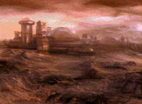
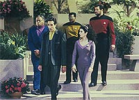
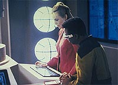
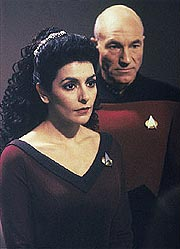
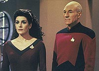

|
MANCHETE
DO EPISDIO
Histria
traz viajante do tempo farsante
e subestima bom senso da tripulao
Episdio
anterior | Prximo
episdio
Sinopse:
Data Estelar: 45470.1.
A Enterprise presta ajuda a uma colnia humana em Moab IV, um
planeta que acreditava-se ser desabitado e que est para sofrer
intensos abalos ssmicos em razo da aproximao de um fragmento
de ncleo estelar. Picard contata o lder da colnia, Aaron Conor,
com uma oferta para evacuar sua populao. Conor recusa, contando
ao capito que a evacuao iria destruir sua sociedade
geneticamente projetada.
 Em
vez disso, o lder procura uma soluo alternativa e,
relutantemente, permite o transporte de Riker, Geordi e Troi
superfcie --os primeiros visitantes que a colnia j teve em sua
histria-- para ajud-los. Conor escala Hannah Bates, uma
cientista da colnia, para trabalhar com Geordi. Riker volta para a
Enterprise juntamente com Geordi e Hannah, que deixa a colnia pela
primeira vez para trabalhar no salvamento de seu lar.
De volta Enterprise, Hannah fica fascinada pela tecnologia avanada
da nave. Enquanto isso, Troi conversa com Picard, enfatizando a
importncia de trabalhar para preservar o modo de vida da colnia,
apesar da desaprovao do capito a respeito de engenharia gentica.
Mais tarde, Hannah e Geordi descobrem que a tecnologia do visor do
engenheiro podem ajudar a desviar o fragmento do planeta.
Troi retorna colnia e acaba sucumbindo a seus sentimentos romnticos
por Conor. Na manh seguinte, ela tristemente diz adeus, percebendo
que sua composio gentica iria para sempre alterar o equilbrio
engenheirado da colnia. Quando ela se prepara para sair, Geordi e
Hannak esto de volta, com o anncio de que precisaro
transportar 50 pessoas para o planeta a fim de instalar o
equipamento necessrio para proteger a colnia. Sabendo que o
nico meio de salvar seu povo sem ter de deixar o planeta, Conor
concorda.
Hannah e Geordi, trabalhando na Enterprise, conseguem desviar o
curso do fragmento e salvar a colnia. Mas a cientista no est
muito contente --tendo encontrado e trabalhado com tecnologia
superior de seu mundo, ele decide que quer deixar a colnia.
Para conseguir isso, ele encena a existncia de uma brecha na
biosfera que iria exigir a evacuao da colnia.
 Geordi,
entretanto, percebe o que Hannah est fazendo e consegue desfazer o
truque. Quando Hannah explica suas aes, Conor percebe que no
pode mant-la l contra a vontade dela, e a autoriza e a outros
que queiram deixar a colnia que o faam. Vinte e trs colonos,
incluindo Hannah, pedem asilo na Enterprise, criando um desequilbrio
irreparvel na colnia, fazendo Picard se questionar se a ajuda
que ele forneceu acabou sendo to prejudicial quanto o fragmento
estelar poderia ser.
Comentrios:
"The
Masterpiece Society" parece um episdio mais adequado
primeira ou segunda temporadas da srie do que quinta, quando
ele realmente foi produzido. Que no se pense que essa uma
avaliao com base na qualidade. Na verdade, o que o alinha aos
primeiros episdios da Nova Gerao o tom.
A histria abandona totalmente o desenvolvimento de personagens e,
em vez disso, conduz todo o seu foco para o enredo --cujo contedo
extremamente moral, com direito "mensagem trekker da
semana", que era to rotineira nos episdios da srie
original e nas primeiras temporadas da Nova Gerao.
Isso no necessariamente ruim. Alis, aqui neste caso, o episdio
acabou sendo beneficiado pelo grande entrosamento e desenvolvimento
j existente entre os personagens da srie para enriquecer uma
histria totalmente voltada para si mesma, e muito pouco
direcionada aos personagens.
Alm da discusso j trivial sobre a Primeira Diretriz (onde,
diga-se de passagem, muito reconfortante ver a posio de
Picard a respeito da questo, mostrando que a Primeira Diretriz no
feita para civilizaes no-humanas, mas para toda e qualquer
sociedade cujo modo de vida possa ser alterado pela influncia da
Enterprise), h um assunto que pouco foi abordado em Jornada nas
Estrelas. Qual, afinal, a natureza da evoluo tecnolgica?
 Seria
ela decorrncia, como defende Geordi, da necessidade? Ou a
curiosidade humana, por si s, j fora motriz suficiente para
empurrar a tecnologia adiante? Essa discusso incomoda filsofos h
um bom tempo, e no est perto de ser respondida, se que o ser
um dia. Entretanto, possvel (e isso o episdio faz muito bem)
partir para uma abordagem pragmtica da questo, e ver que a
necessidade capaz de oferecer vantagens em princpio imprevisveis
ao desenvolvimento tecnolgico.
No caso do episdio, foi o advento do visor de Geordi, criado
totalmente a partir de uma necessidade, que forneceu a resposta para
a soluo de um problema totalmente diverso --o desvio do
fragmento estelar. Na histria humana, exemplos do tipo tambm no
faltam. O impacto do desenvolvimento da explorao espacial na
vida cotidiana est a para provar, s para citar um ponto
auto-explicativo.
 Em
ltima anlise, "The Masterpiece Society" oferece
o seguinte a respeito do tema: quanto mais problemas uma sociedade
tem para resolver, maior o nmero de solues que ela produzir.
Quanto mais solues, maior a chance de encontrar aplicaes no-intencionais
entre os diversos desenvolvimentos. A sociedade engenheirada de Moab
IV carecia de problemas para possuir a capacidade adaptativa da
tripulao da Enterprise. No fundo, no fundo, a dvida tem at
um carter darwinista. Se voc elimina os fatores de seleo
natural (os problemas), no h evoluo.
O terreno fica escorregadio quando entramos nas idias do
darwinismo social, por isso no vale desenvolver mais a respeito.
De qualquer forma, o tom das discusses demonstra muito bem o grau
filosfico deste episdio.
Um assunto que surpreendentemente pouco abordado, tendo em vista
a premissa geral, a polmica da engenharia gentica aplicada em
seres humanos. O episdio se d por contente em eliminar a discusso
de uma vez s, nas palavras de Picard --totalmente adverso idia
de alterar o DNA de homens e mulheres para "projetar" uma
sociedade ideal.
Em princpio, o comentrio e o grau de estagnao daquela
sociedade so crticas mais do que suficientes, mas seguramente o
tema poderia ter sido mais desenvolvido. De qualquer forma, no se
pode abraar o mundo em 46 minutos.
Deixando as questes filosficas, o episdio, enquanto valor de
entretenimento, bastante agradvel. A histria flui em ritmo
constante, o que pode ser um pouco tedioso, mas pelo menos ela no
emperra em alguns momentos, como acontece em alguns episdios.
 Troi,
por incrvel que parea, se sai muito bem neste episdio. Em vez
de passar o tempo todo jogando moralidade na cara dos outros, como
costuma acontecer, chegou a vez da conselheira dar a sua pisada na
casca de banana. E a cena em que ela conta a Picard o que aprontou
no planeta bastante intensa.
Quando chegamos quele turboelevador, estamos intensamente curiosos
para ver a reao do capito ao deslize de sua oficial. E Picard
reage de uma forma at surpreendente, mas absolutamente condizente
com o explorador e humanista que ele : ele compreende e alivia os
ombros da conselheira.
A cena mostra, mais do que tudo, o sentimento familiar que existe
entre os tripulantes da Enterprise. Fosse apenas uma cadeia de
comando nos moldes militares, Troi receberia uma reprimenda e ponto
final. Felizmente, no assim que as coisas funcionam nas naves
espaciais do sculo 24.
Do ponto de vista da direo e dos efeitos especiais, o trabalho
competente, como de costume, mas no chega a chamar a ateno.
Mas basta ver a quantidade de comentrios gerada por um nico episdio
(e olha que muito mais poderia ter sido dito) para chegar concluso
que "The Masterpiece Society", embora fuja ao tom
que melhor consagrou A Nova Gerao, vale o tempo gasto com
ele.
Citaes:
Hannah - "If we're
so brilliant, how come WE didn't invent any of these things?"
("Se somos to brilhantes, como NS no inventamos nada
dessas coisas?")
Geordi - "Well, maybe the necessity really is the mother of
an invention. You never really look for something until you need
it."
("Bem, talvez a necessidade realmente seja a me da inveno.
Voc nunca procura algo at que precise dele.")
Trivia:
 Palavras de Jeri Taylor: "Esse episdio teve uma idia que eu
no gostei desde o comeo. No gostei do conceito, da histria e
do roteiro. Foi sem dvida um dos episdios mais fracos dessa
temporada". Jeri Taylor era produtora da Nova Gerao
na poca, junto com Rick Berman e Michael Piller.
Palavras de Jeri Taylor: "Esse episdio teve uma idia que eu
no gostei desde o comeo. No gostei do conceito, da histria e
do roteiro. Foi sem dvida um dos episdios mais fracos dessa
temporada". Jeri Taylor era produtora da Nova Gerao
na poca, junto com Rick Berman e Michael Piller.
Ficha
tcnica:
Histria de James Kahn e Adam
Belanoff
Roteiro de Adam Belanoff e Michael Piller
Direo de Winrich Kolbe
Exibido em 10/02/1992
Produo: 113
Elenco:
Patrick Stewart como
Jean-Luc Picard
Jonathan Frakes como William Thomas Riker
Brent Spiner como Data
LeVar Burton como Geordi La Forge
Michael Dorn como Worf
Gates McFadden como Beverly Crusher
Marina Sirtis como Deanna Troi
Elenco convidado:
John Snyder
como Aaron Conor
Dey Young como Hannah Bates
Ron Canada como Martin Benbeck
Sheila Franklin como alferes Felton
Episdio
anterior | Prximo
episdio
|